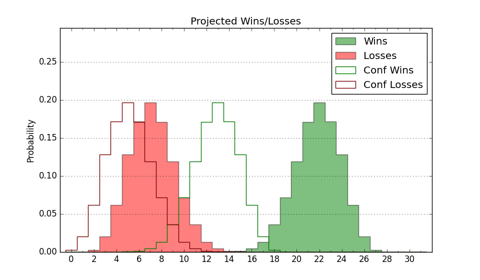

| Home | Game Probabilities | Conferences | Preseason Predictions | Odds Charts | NCAA Tournament |
| City: | Birmingham, Alabama | |
| Conference: | Southern (1st)
| |
| Record: | 14-3 (Conf) 23-5 (Overall) | |
| Ratings: | Comp.: 9.6 (92nd) Net: 9.6 (92nd) Off: 113.3 (60th) Def: 103.7 (146th) SoR: 49.5 (56th) |
| Remaining | ||||||
|---|---|---|---|---|---|---|
| Date | Opponent | Win Prob | Pred. | |||
| 3/2 | The Citadel (230) | 89.4% | W 84-69 | |||
| Previous | Game Score | |||||
| Date | Opponent | Win Prob | Result | Off | Def | Net |
| 11/6 | @Purdue (2) | 4.5% | L 45-98 | -42.4 | -1.9 | -44.3 |
| 11/10 | @VCU (71) | 28.8% | L 65-75 | -13.3 | 2.6 | -10.7 |
| 11/17 | South Carolina St. (308) | 94.8% | W 89-72 | -10.8 | 4.3 | -6.5 |
| 11/22 | Alabama St. (315) | 95.2% | W 99-67 | 14.3 | -1.4 | 12.9 |
| 11/24 | Merrimack (182) | 85.4% | W 79-71 | -2.0 | -10.6 | -12.5 |
| 11/25 | North Carolina A&T (340) | 97.1% | W 101-83 | -2.6 | -11.1 | -13.7 |
| 11/30 | Louisiana Lafayette (152) | 80.6% | W 88-65 | 5.3 | 14.0 | 19.3 |
| 12/11 | Alabama A&M (339) | 97.0% | W 118-91 | -2.0 | -8.0 | -10.0 |
| 12/16 | Belmont (123) | 73.6% | W 99-93 | 10.8 | -14.8 | -4.0 |
| 12/19 | @Valparaiso (291) | 81.0% | W 79-61 | 6.0 | 8.0 | 14.0 |
| 12/21 | @Texas Southern (283) | 80.3% | W 87-65 | 1.6 | 12.5 | 14.2 |
| 1/3 | Chattanooga (139) | 77.9% | W 89-74 | 5.5 | 3.4 | 8.9 |
| 1/6 | @The Citadel (230) | 71.3% | W 80-64 | 4.4 | 5.4 | 9.7 |
| 1/11 | UNC Greensboro (129) | 75.4% | W 79-70 | -8.7 | 5.7 | -3.1 |
| 1/13 | VMI (351) | 98.0% | W 134-96 | 17.9 | -18.8 | -0.9 |
| 1/16 | @Western Carolina (117) | 43.8% | W 75-71 | 2.7 | 6.1 | 8.7 |
| 1/20 | Mercer (229) | 89.3% | W 87-80 | -1.0 | -8.9 | -9.9 |
| 1/24 | @Furman (141) | 51.4% | L 68-78 | -19.3 | 5.7 | -13.6 |
| 1/27 | @East Tennessee St. (216) | 68.6% | W 75-72 | 5.4 | -5.5 | -0.1 |
| 1/31 | Wofford (170) | 83.6% | W 81-79 | 4.0 | -18.2 | -14.2 |
| 2/3 | @Chattanooga (139) | 50.9% | W 78-56 | 7.9 | 30.4 | 38.3 |
| 2/8 | @UNC Greensboro (129) | 47.3% | W 78-69 | 3.1 | 13.2 | 16.3 |
| 2/10 | @VMI (351) | 93.4% | W 102-63 | 13.7 | 11.2 | 24.8 |
| 2/14 | Western Carolina (117) | 72.6% | W 88-62 | 15.3 | 12.9 | 28.2 |
| 2/17 | @Mercer (229) | 71.1% | L 84-88 | 1.2 | -16.4 | -15.2 |
| 2/21 | Furman (141) | 78.3% | W 74-72 | -8.7 | 0.8 | -7.9 |
| 2/24 | East Tennessee St. (216) | 88.1% | W 87-71 | 3.9 | -1.6 | 2.2 |
| 2/28 | @Wofford (170) | 59.9% | L 69-91 | -14.6 | -28.0 | -42.6 |
| Stats & Trends | |||||
|---|---|---|---|---|---|
| Current | Day | Week | Month | Season | |
| Composite | 9.6 | -0.0 | -1.2 | +2.2 | +8.9 |
| Comp Rank | 92 | -1 | -8 | +11 | +66 |
| Net Efficiency | 9.6 | -0.0 | -1.3 | +1.8 | -- |
| Net Rank | 92 | -1 | -8 | +9 | -- |
| Off Efficiency | 113.3 | +0.0 | -0.4 | +1.4 | -- |
| Off Rank | 60 | -- | -4 | +6 | -- |
| Def Efficiency | 103.7 | -0.0 | -0.8 | +0.3 | -- |
| Def Rank | 146 | -1 | -17 | +17 | -- |
| SoS Rank | 238 | +4 | +26 | +80 | -- |
| Exp. Wins | 23.9 | -0.0 | -0.6 | +0.8 | +5.0 |
| Exp. Conf Wins | 14.9 | -0.0 | -0.6 | +0.8 | +3.3 |
| Conf Champ Prob | 100.0 | -- | +0.1 | +26.2 | +73.8 |

| Advanced Stats | ||
|---|---|---|
| Stat | Value | Rank |
| Off Eff FG % | 0.569 | 20 |
| Off Ast Ratio | 0.172 | 45 |
| Off ORB% | 0.285 | 155 |
| Off TO Rate | 0.165 | 292 |
| Off FT Ratio | 0.327 | 190 |
| Def Eff FG % | 0.514 | 206 |
| Def Ast Ratio | 0.148 | 229 |
| Def ORB% | 0.314 | 311 |
| Def TO Rate | 0.182 | 20 |
| Def FT Ratio | 0.394 | 308 |